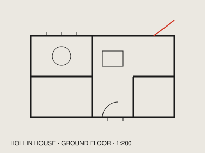
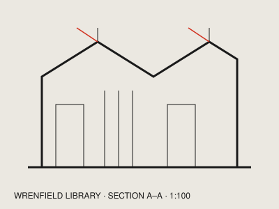
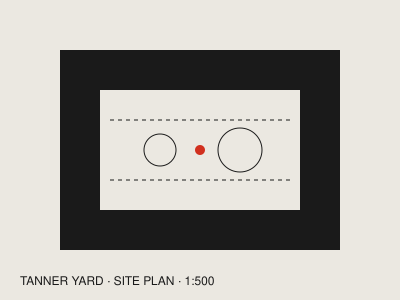

01
Hollin House
A timber house for a retired couple on a north-facing slope. One long room, a stove, and a heating bill of £212 last winter.
Architects · Leith, Edinburgh · since 2009
Nine people. Forty-one buildings finished. Every one of them measured a year after we hand over the keys.

01
A timber house for a retired couple on a north-facing slope. One long room, a stove, and a heating bill of £212 last winter.

02
A reading room under north-light roofs for a town that lost its last bookshop. Open until ten, run by volunteers on Sundays.

03
Thirty-four homes for a housing co-operative around a shared yard, built in brick that came out of the tannery it replaced.
| No. | Project | Place | Year | Status |
|---|---|---|---|---|
| 41 | Tanner Yard housing | Leith | 2025 | On site |
| 40 | Hollin House | Perthshire | 2024 | Finished |
| 39 | Bell Street surgery | Dundee | 2024 | Finished |
| 38 | Wrenfield Library | Fife | 2022 | Finished |
| 37 | Two bothies | Assynt | 2021 | Finished |
| 36 | Gorgie school annexe | Edinburgh | 2021 | Finished |
We visit in two seasons before we draw a line, and we ask what you would never change about where you live now.
Every scheme comes with its heating bill and its embodied carbon, worked out before planning, not after.
We stay on site weekly through construction and fix what we got wrong at our cost for two years.
Write to us with a site, a budget and a date. We answer every letter within a week, including the ones we can’t take on.
Marrow & Lund Architects